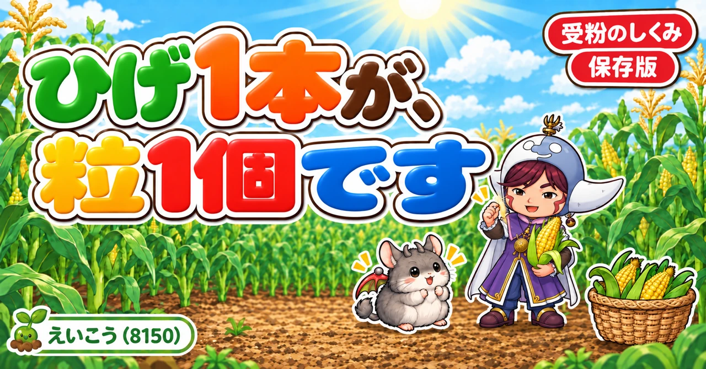
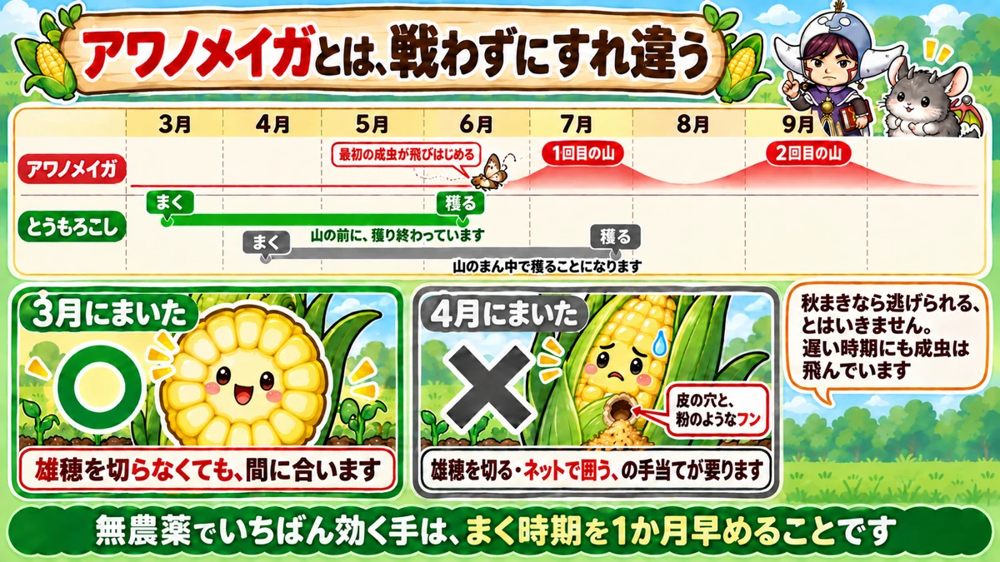
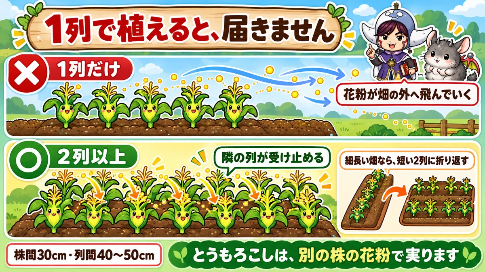
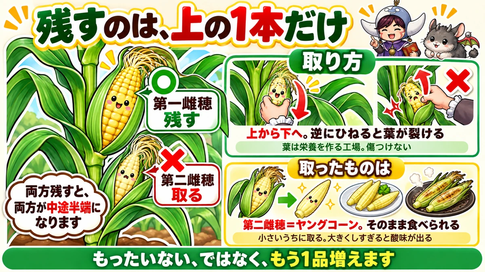
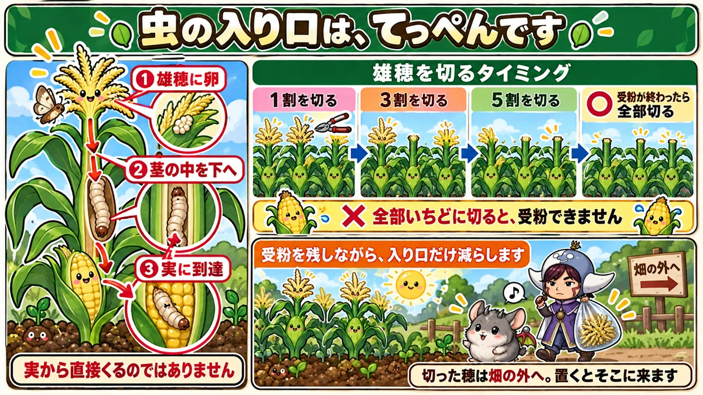
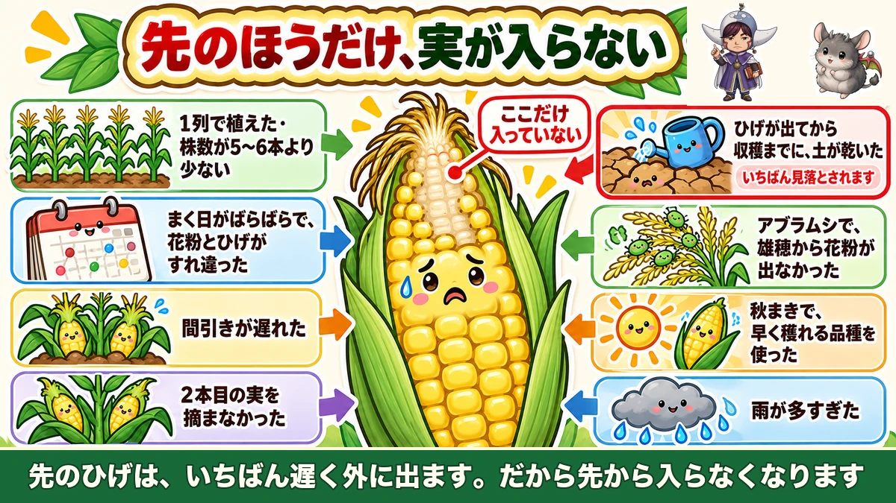
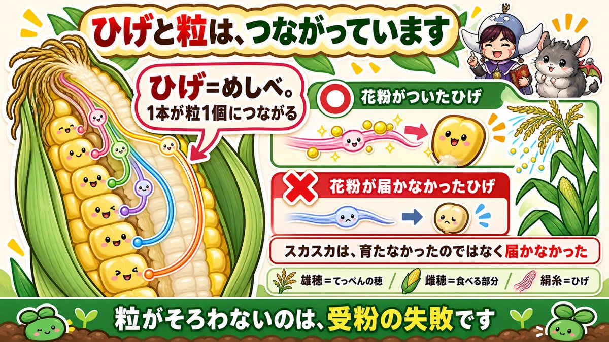

とうもろこし栽培の確認帳｜種まき・受粉・虫対策から収穫まで

どうも、8150（えいこう）です🌱 家庭菜園歴8年、理科の教員免許を持っていて、有機・無農薬で野菜を育てています。
📖 この記事の目次
この記事で分かること
- 栽培を始める前に、同じ品種を同じ時期に育てる場所を、二列以上で用意します。
- 寒さを避けて始める方法と、保温して早く始める方法を分けて考えます。早まきは虫対策になりますが、保温の管理が必要です。
- 間引きは一か所一株を目標に進め、根元から出るわき芽は基本的に残します。
- 粒をそろえるには、花粉だけでなく、開花のタイミング、水分、株の育ち方も確認します。
- 雄穂を切る作業は、花粉を使う期間と虫対策を両立させるための判断が大切です。
- 収穫日は種袋の日数と実の状態で絞り込み、収穫後の保存や片付けまで予定に入れます。
とうもろこしを育てるとき、まず決めたいのは『いつ食べるか』『何株まとめて育てるか』『寒さと虫をどう防ぐか』です。肥料を選ぶ前に、この三つをそろえると段取りが組みやすくなります。
背の高い株が並ぶと、なんかもう成功した気分になりますよね。でも、葉が育つことと、食べる粒がびっしり並ぶことは別の段階です。花が出てからの短い期間にも、見ておきたいところがあります。
このページは、種をまく前の計画にも、育てている途中の確認にも使えるようにまとめました。初めてなら早見と手順から。実の入り方が気になるみなさんは、症状の章へ進んでください。全部を一度に覚える必要はありません。いま畑で起きていることから、次の作業を選んでいきましょう🌽
早見：とうもろこしの育て方（ひと目で分かる数字）
予定表に書いておく数字
- 一般的な春の種まき：4〜5月という説明があります。霜や低温の心配がなくなり、土が十分暖まる時期が基準です。
- 保温を組み合わせた春の種まき：2〜3月という説明があります。関東で6月収穫を目指す例などがあり、露地へそのまままく日程とは分けます。
- 夏の種まき：6〜7月にまき、8月下旬〜10月上旬に収穫する計画があります。中間地で8月まきの例もありますが、品種と地域の適期を確かめる条件付きです。
- 地域差：冷え込みの早い地域は秋の収穫までに育つ期間を確保。春の早まきは、地域の霜の時期と保温できる環境を確認します。全国共通の月だけで決めません。
- 苗を植える大きさ：本葉1〜2枚、2〜3枚、草丈10cmで本葉3枚、草丈12〜15cm以内という複数の目安があります。苗を大きくしすぎず、根を崩さずに植える段取りを優先します。
- 株と株の距離：30cmがよく使われる目安。二列の列間は40cmの例があります。
- うね幅：二列植えで95cmという例があります。株間、列間、通路の幅を別々に考え、畑に収まるか確認します。
- 株数と配置：二列以上にまとめます。少なくとも5〜6株という説明がありますが、その数だけで粒ぞろいを保証するわけではありません。
- 直まきの粒数：一か所3〜4粒という方法が中心。育苗では、セルトレイで2粒、ポットで3〜4粒という例があります。
- 種を覆う土の厚さ：約1cmという説明が多くあります。穴をくぼませることと、種の上に厚く土をかぶせることは区別します。
- 発芽の温度：発芽しやすい温度として25〜30℃、広い範囲として10〜40℃という説明があります。地温10℃以上という下限の話と、地温25℃以上を重視する話もあり、同じ意味の数字ではありません。
- 土の酸度：pH5.5〜6.5が目安です。必要かどうかは土の状態を調べてから判断します。
- 土づくりの時期：種まきや植え付けの2〜4週間前という幅があります。2週間前、3週間以上前、約1か月前と説明が異なります。
- 耕す深さ：15〜20cmの説明と、少なくとも30cmという説明があります。今の土の硬さや、作業できる深さも確かめます。
- 追肥の時期：本葉4〜5枚前後、雄穂が見え始めるころがよく挙がります。雌穂のひげが出るころも含める方法があります。
- 追肥の回数：1〜3回で説明が分かれています。元肥や土に残る養分の条件を抜きに、回数だけで決めません。
- 収穫まで：種まきから80〜90日という目安が多くあります。90日タイプなど、品種の表示を先に確認します。受粉の日から数える数字に置き換えないでください。
- 連作の間隔：連作の問題は比較的起こりにくいという説明が中心です。材料には一律に何年あけるという指定はありません。前作の病害虫や根の状態が悪かった場所は、同じ判断にしません。
数字を組み合わせる前の確認
ここで大事なのは、数字を全部ひとつの栽培法へ寄せ集めないことです。例えば、寒さが残る2月の計画と、暖かくなってからの5月の計画では、発芽させる場所も日々の管理も違います。早まきの日付だけを借りて、保温の作業を省くと話が合わなくなります。
種袋の『適した地域』『種まきの期間』『成熟までの日数』を、まず同じ品種の情報としてまとめます。その横に、実際に種をまいた日を記録してください。苗を買った場合は植えた日も書きますが、植え付け日から種まき起点の日数をそのまま数えないようにします。
畑の広さは、横幅だけでなく作業する通路も必要です。雄穂が出る高さになってから、株の間へ手を入れられないと、虫を探すのも人工授粉も大変になります。株の置き場所と、みなさんが立つ場所を一緒に描くと分かりやすいですよ。
- 同じ品種をまとめて育てる範囲を決めた
- 二列以上の配置と通路が収まった
- 地域の適期と、保温が必要な期間を確認した
- 種まき日と収穫予定を記録する場所を用意した
- 花が出るころも畑を見に行ける予定にした
この段階で「二株だけなら置けるけど・・・」となった場合は、粒がそろう難しさも含めて計画を見直します。株を並べられるかと、食べる実がよく育つかは、同じ条件ではないんですね。
作業の手順（時期の順）
1．収穫したい季節から、品種と種まき日を決める
- 春から育てて初夏に食べるか、夏から育てて秋に食べるかを決めます。
- 種袋にある地域別の種まき期間と、成熟までの日数を確認します。
- 早まきする場合は、保温する場所と、暖かい日に換気する作業を用意します。
- 夏まきでは、秋の冷え込みまでに育つ品種か確認します。中生を選ぶ説明があり、極早生なら何でもよいとは考えません。
- 近くで別の種類のとうもろこしを育てる予定があるか調べ、開花が重ならない計画を考えます。
品種は、黄色、白色、黄と白が混じるものなど、食べたい見た目から選ぶ楽しさもあります。ただし、白い品種のそばに黄色い品種を置くと、花粉の影響でその年の粒の色が変わることがあります。甘いとうもろこしとポップコーン用を一緒に育てる場合も注意が必要です。
ここでは、確認が済んでいない商品名をおすすめ一覧にはしていません。手元の種袋で、食用の種類、色、栽培時期をそろえて判断してください。甘さの紹介だけで選ぶより、自分の地域で最後まで育つかを先に見る方が計画は立てやすいです。
時期を一か月ほどずらして品種間の受粉を避ける方法もあります。ただ、種まきを一か月ずらしたら開花も必ず一か月ずれる、という保証ではありません。気温と成熟の早さが違うので、雄穂とひげが実際に出る時期も確認します。

2．植える配置と水の逃げ道を整える
- 同じ品種を、二列以上のまとまりとして配置します。
- 株間30cm、列間40cmの例を出発点に、使う品種の表示と照らし合わせます。
- 日当たりを確認し、周囲の背の高いものの影が長くかからない場所を選びます。
- 雨のあとに水が集まるところは避け、うねが通路より低くならないよう整えます。
- 手入れをする通路と、ネットを張る支柱の場所を空けておきます。
細長い空き地へ一直線に並べたくなりますが、とうもろこしでは花粉が届く配置も大切です。同じ株数でも、長い一列に散らすより、互いの株が近くにまとまる形を考えます。見た目をきれいに並べるだけでは、花粉の配達先が遠くなってしまうんですよね。
二列植えでうね幅95cmという例があります。これは株間95cmという意味ではありません。『うね全体』『列と列』『株と株』を紙に別々に書けば、数字の取り違えを減らせます。南北方向のうねを勧める説明もありますが、方角だけを優先して水がたまる場所を選ばないでください。

3．土づくりを済ませ、種や苗を用意する
- 前作で入れた肥料と、その後の育ち方を振り返ります。
- 土が硬い層や水のたまる層を確認して、根が伸びる場所を整えます。
- 元肥を使う場合は、植える2〜4週間前を目安に準備します。使うものの表示も確認してください。
- 土へ混ぜる深さは、15〜20cmの方法と30cm以上を重視する方法を、土の状態に合わせて検討します。
- 時間が必要な土づくりと育苗を並行するなら、植えられる日を先に決め、苗を大きくしすぎないようにします。
とうもろこしは、株を大きく育てるために養分をよく使います。ただし、その説明を「畑の状態に関係なく肥料を増やす」と受け取らないことが大事です。前作の肥料が残る場所へ同じ量を足すと、予定していたより濃くなってしまいます。
肥料の体積と重さにも注意してください。材料にはccやLで量を示す方法と、gやkgで示す方法が混ざっています。同じ数字なら同じ成分量、というわけではありません。別の配合の数値を足し合わせず、使う製品の表示を確認する形で進めます。
土の酸度の目安はpH5.5〜6.5です。測っていないのに毎回同じだけ調整するより、今の状態を確かめてから考えます。土づくりって、何かを入れたら仕事をした感じがするんですけど、先に調べる作業もちゃんと仕事です☺️
4．直まきなら、種の場所を決めて守る
- 株を残す位置ごとに、種をまく場所を作ります。
- 一か所に3〜4粒を置き、約1cmの土をかぶせる方法を目安にします。
- 土が乾きすぎないよう水分を管理し、雨のあとに水がたまらないかも見ます。
- 鳥に種を食べられないよう、発芽する前から覆いを用意します。
- 芽が出たら、芽へ直接かぶせた覆いをそのまま押し付け続けず、生長を妨げない状態へ替えます。
複数粒をまくのは、芽が出なかったときに空き株ができるのを減らすためです。一粒では必ず発芽しないという意味ではありません。種の状態や温度、土の水分によっても発芽の結果は変わります。
種の尖った側を下へ向ける方法と、向きをそろえなくても育てられるという説明があります。初めてなら、向きに気を取られて、深く埋めすぎたり、乾燥させたりしない方が大切です。姿勢は完璧なのに土がカラカラ、では種も困ります💦
寒い時期にくぼみへまく方法もありますが、種の上の土を厚くする方法とは分けてください。通路の雨水が流れ込むようなくぼみでは、保温を考える前に過湿の問題が出ます。地面の高低と、覆う土の厚さを別々に見ます。
5．苗から始めるなら、小さいうちに根を守って植える
- 育苗する場合は、発芽に必要な暖かさを確保できる場所を用意します。
- 発芽後は光を確保し、保温している場所が暑くなりすぎないようにします。
- 本葉の数と草丈を見ながら、植える日に畑の準備が済んでいるか確認します。
- 根の周囲の土をなるべく崩さず、苗を植えます。
- 植えたあとは土の乾燥と低温を見て、苗が動き出すまで観察します。
植える大きさには、本葉1〜2枚から3枚前後、草丈5cm未満を挙げるものから12〜15cm以内とするものまで幅があります。この数字を「15cmまで放っておいてよい」と読むのではなく、使う容器と苗の根の状態を合わせて見ます。
直まきには、途中で根を動かさず育てられる利点があります。育苗には、寒い時期の発芽管理や、鳥に種を食べられる問題を扱いやすくする利点があります。どちらが常に正解かを先に決めず、自分が発芽まで見守れる場所と、植え付けの作業をできる日から選びましょう。
6．間引きで一か所一株にし、わき芽は分けて考える
- 芽がそろったら、本葉の数と株の育ち方を見ます。
- 本葉3枚で一本へ絞る方法、本葉4〜5枚で間引きを進める方法などから、最終的に一か所一株にする段取りを決めます。
- 残す株の根を傷めないよう、余分な苗を根元で切る方法を使います。
- 株元からあとで出るわき芽は、別の種から育った苗と区別します。
- 基本的にわき芽は取りません。間引きが必要な複数の苗を、わき芽だと思って残さないようにします。
この区別、ほんま大事です。最初に三粒まいて三株育ったものは、三つの株が同じ場所で競っている状態です。一本の株から枝のように出る分げつとは違います。『取らなくていい』の話を、種から出た複数の苗へ当てはめないでください。
間引きが遅いと、株ごとの根や葉が混み合い、必要な養分が分かれます。惜しい気持ちは分かりますが、全部残すと食べる実まで全部大きくなる、とはいかないんですね。
わき芽が見えないことを肥料不足の手掛かりとする説明もあります。ただ、わき芽の有無だけで肥料を追加せず、葉の色や根元、生育の進み方も確認します。
7．生育の節目に追肥を考え、水分も確認する
- 本葉4〜5枚前後になったら、葉色と育ち方、元肥の内容を確認します。
- 採用した栽培法に合わせて、一回目の追肥を行います。
- 雄穂が見え始めるころに、次の追肥が必要か確認します。
- 雌穂のひげが出るころを三回目の時期にする方法では、その時期も忘れずに観察します。
- 追肥後は乾燥させたままにせず、水分が足りているか確認します。
元肥は先に入れる肥料、追肥は育つ途中で追加する肥料です。回数の説明は一回から三回まで分かれています。三回という数字だけを見て、一回分の量も別の方法から借りると、合計量が元の説明と変わってしまいます。
字幕で種類を確認できる例として、鶏ふんを株の両側の穴へ入れる方法があります。一つの穴へ10ccずつ、二か所で計20cc、株元から約15cm離し、深さ約10cmという例です。これはその方法の組み合わせとして理解し、どの肥料にも同量で使える共通処方にはしません。
その例では、肥料を外へ散らさず穴へ入れ、水を加えて土で閉じます。二回目以降は根が広がっているため、株間の中央やうねの肩など、最初と違う位置へ施します。同じ場所へ毎回穴を開けるより、根の広がりを考えるということです。
開花期から実が育つ間は、土の水分にも気を配ります。追肥をしたという記録があっても、乾いたままなら吸収の条件がそろいません。反対に、通路まで水がたまる状態を続ける必要もありません。土の乾き方と雨を見て、足りない分を補います。
8．土寄せと保温の調整で株を支える
- 株元の土が減っていないか、雨のあとに確認します。
- 土寄せを行う方法では、周囲の土を株元へ寄せて支えます。
- 保温用のトンネル内は、晴れた日に暑くなりすぎないか見ます。
- 内部が35℃を超えたら換気するという目安があります。発芽後も、閉じっぱなしで管理しません。
- 保温を終える判断は、昼間の暖かさだけでなく、夜の冷え込みや霜の予報も見て行います。
土寄せは、株元を固定し、根元から出る支柱根が土へ届きやすくなるようにする作業です。背が高くなったあとに無理に株を引っ張るより、その前から支える形を作っておきます。
早まきは、虫が増える時期と収穫時期をずらす工夫です。その代わり、寒さへの対応が増えます。暖かい昼を見て覆いを全部外し、その晩に冷える、という流れを避けてください。覆うか外すかの二択だけでなく、換気しながら夜は保温する管理も考えます。
9．雄穂とひげが出たら、花粉の届き方を見る
- 株の上に出る雄穂から、花粉が出ているか確認します。
- 食べる実になる雌穂のひげが、同じころに外へ出ているか見ます。
- 株数が少ない場合や開花がそろわない場合は、人工授粉を補助として考えます。
- 花粉が出る朝の時間帯などに雄穂を軽く揺らし、ひげへ届くようにします。
- 切り取った雄穂を使うなら、まだ花粉を使う株が残っていることを確認し、すべてを一度に切らないようにします。
二列以上でまとまって育ち、開花がそろっていれば、風による受粉を基本にできます。ただし、二列にしたら確認が不要ということではありません。雨の続く時期や、雄穂に虫が多いとき、ひげの出方に差があるときには、花粉が出ている状況も見てください。
人工授粉では、花粉の出る雄穂を使い、別の株のひげへ軽く振りかける方法があります。複数の株の雄穂を使う説明もあります。花粉が出ていない穂を振っても補えませんから、作業する前に穂の状態を確認します。
10．残す実を選び、下の実は若いうちに収穫する
- 茎の上の方につく第一雌穂を、主な収穫対象として確認します。
- 下の第二、第三雌穂は、大きな実を一株一本に絞る方法なら若いうちに取ります。
- ひげが出始めたころを見て、取り遅れないようにします。
- 片手で茎を支え、実を下方向へ折り取って、茎への負担を減らします。
- 取った若い実は、ヤングコーンとして調理に使います。
複数の実を全部育てるより、上の実へ養分を集める考え方です。一株から何本も取れたらうれしいんですけど、まず大きな一本を目標にする方が、管理する点は絞れます。
ヤングコーンは、大きなとうもろこしが完成してから小さいものを選ぶ意味ではありません。下の実を若い段階で取るので、ひげの出始めを見て判断します。大きく育てすぎないようにしてください。

11．虫と鳥獣の対策を、収穫直前まで続ける
- 防虫ネットは、株が大きくなるのを待たず、種まきや植え付けの段階から準備します。
- 側面の隙間を確認し、成長に合わせて株が押されない広さを保ちます。
- 雄穂の周囲、葉の裏、雌穂を包む皮に穴や食べかすがないか見ます。
- 雄穂を切る場合は、ひげの出方と花粉を出す株の残りを確認してから進めます。
- ひげが出たころには、鳥や獣が入る隙間も点検し、収穫まで対策を続けます。
アワノメイガの幼虫が茎や実の中へ入ると、外から見える虫だけを取る作業では追いつかなくなります。ネットを使う目的は、成虫が近づいて産卵する機会を減らすことです。囲ったあとにも、開けた作業口や裾の隙間を戻したか確認しましょう。
字幕で確認できるネットの方法では、横から囲い、余裕があれば上も囲う形です。同じ字幕にも、風に乗って上を越える個体への言及があります。側面だけで完全に侵入を止められるという理解にはしません。囲う高さは使う品種の草丈に合わせ、上面を閉じる場合も雄穂が押されない余裕を取ります。
雄穂を少しずつ切る方法もありますが、小さな家庭菜園で割合だけをまねすると、花粉を出す株がなくなることがあります。まだひげが出ていない雌穂があるなら、その株が受け取る花粉も必要です。切った穂は、その場へ散らさず回収します。

鳥対策には、上面や横の隙間へ釣り糸を張る方法があります。獣対策では、ネットの裾を浮かせないことが大切です。登って入る動物もいるため、高さだけを決めて安心しないでください。実に直接かぶせるだけでは、株ごと折られる可能性もあります。
12．実の状態を見て収穫し、すぐ次の扱いへ移す
- 種まき日と種袋の日数から、収穫を確認し始める時期を決めます。
- ひげが茶色く乾く変化と、実を触ったときのふくらみを見ます。
- 判断が難しい場合は、皮の一部を開いて粒の育ち方を確認します。
- 食べ頃になった実を朝に収穫する計画にし、調理や保存の準備も済ませます。
- すぐ食べない分は冷蔵し、食べ切れない分は加熱して冷凍するなど、早めに扱います。
ひげの色だけで判断すると、受粉が十分でなかった実も収穫候補に見えてしまいます。日数、ひげ、実のふくらみを合わせてください。粒がない部分と、粒があるけれど小さい状態は違うので、確かめた結果に応じて待つかどうかを考えます。
収穫後は、畑にいたときと同じようには状態を保てません。「明日やろう」と台所で待たせる前に、食べる分と保存する分を分けます。収穫の日に鍋や保存場所まで用意しておくと、最後の作業が楽になります。
13．残った株を片付け、次の野菜を計画する
- 主な実の収穫が終わったら、残った株を早めに片付けます。
- 茎の内部に虫がいる、傷んでいるなどの状態を確認します。
- 健全な茎葉を土へ戻す場合は、約20cmに刻むなど、扱いやすくします。
- 分解を待つ期間と次の植え付け日を分け、直後に次の根を置く計画にしません。
- 後作は、前作の肥料と病害虫の履歴を見て決めます。
とうもろこしのあとに白菜やブロッコリー、葉物などを育てる説明があります。養分をよく吸う作物だったから残りはゼロ、あるいは元肥を入れたから十分残っている、と一律には決めません。実際の育ち方と、どれだけ入れたかを振り返ります。
茎葉を刻んで土へ戻す方法には、分解を待つ時間が必要です。二週間の説明と、少なくとも一か月の説明があります。太い茎や根が残る状態を、日数だけで完成扱いにしないでください。虫の入った茎を次の作物の場所へそのまま戻すことも避け、健全な材料と分けます。
失敗の見分け方（症状→原因→やること）
芽が出ない、まいた場所が空いている
- 症状：種をまいた位置に芽が見えず、ほかの位置との差が大きくなっています。
- 考えられる原因：地温が低い、土が乾いた、過湿で種が傷んだ、鳥に食べられた、覆う土が厚かったなどです。
- やること：まず土の温度と水分、表面の掘られた跡を確認します。まき直すなら、同時に育つ株との開花のずれも考えます。
種がないからといって、すぐ鳥と断定はできません。土が湿ったまま冷えていれば、発芽が遅れたり傷んだりすることもあります。保温だけ、水やりだけと一つに決めず、種を置いた場所の条件を調べてください。
遅れてまき直した株は、最初の株と花の時期がずれる可能性があります。空きを埋めることと、受粉に使える株を増やすことは同じではないので、開花期には両方の状態を見ます。
苗が急にしおれた、保温をやめてから傷んだ
- 症状：それまで育っていた苗が、植え付け後や覆いを外したあとにしおれています。
- 考えられる原因：低温や霜、植え付け時の根の傷み、乾燥、逆に水がたまった状態などです。
- やること：直前の夜の気温、土の湿り方、植え付け時に根を崩したかを確認します。肥料を足す前に、その条件を整えます。
昼間が暖かかったという記憶だけでは、寒さの影響は判断できません。夜の冷え込みや、覆いを外した日を記録すると原因を探しやすくなります。保温へ戻すときも、晴れた日には中が高温にならないよう換気を組み合わせます。
葉の色が薄い、株がなかなか大きくならない
- 症状：葉が黄緑色に見え、同じ時期の株に比べて生育が進みません。
- 考えられる原因：養分不足の可能性があります。ただし、冷え、根の傷み、土の水分の偏りも見落とせません。
- やること：元肥と追肥の記録、葉の数、根元の様子を合わせて確認します。追加施肥をするなら、採用している方法の量と位置を守ります。
材料には『葉色が薄い』『分げつがない』『支柱根が見えない』という三点を肥料不足の手掛かりにする説明があります。これは一つの見方です。苗が小さい時期や、根がうまく働いていない状態を、肥料の量だけで処理しないでください。
弱った株へどっさり足すより、生育の節目で必要な作業ができていたかを振り返ります。失った生育期間を、あとから肥料だけで取り戻すのは難しいからです。
実の全体に、粒のない部分が多い
- 症状：皮を開くと粒がまばらで、穂の広い範囲に空きがあります。
- 考えられる原因：株数や配置、雄穂とひげの時期のずれ、雨の続いた開花期、雄穂の虫害などで受粉の条件がそろわなかった可能性があります。
- やること：一列に散らしていなかったか、同じ時期の株が何株あったか、花粉が出ていたかを振り返ります。まだ新しいひげが出て花粉もあるなら、人工授粉を補助として考えます。
実ができあがったあとに花粉をかけて、空いた粒を全部埋め直すことはできません。今の実の判断と、次に改善する配置を分けます。来季用の記録には、株数だけでなく、種まき日がそろっていたかも残してください。
根元側は育ったのに、先端だけそろわない
- 症状：穂の下側は粒が育っていますが、先の方に空きや小さい粒があります。
- 考えられる原因：遅く出たひげに花粉が届かなかった、開花後に土が乾いた、実を多く残した、間引きが遅れたなど、複数の可能性があります。
- やること：ひげが出た時期の水分、残した実の数、一か所の株数を確認します。虫穴や食べかすがある場合は、粒の入り方とは別に虫害を調べます。
先端の空きは「受粉が悪かった」の一言で片付けやすい症状です。ただ、材料には水不足や養分の分散も挙がっています。配置を直せば全部解決する、と決めずに、花が出てからの管理も一緒に見てください。

雄穂にアブラムシが集まっている
- 症状：株の上の雄穂や成長している部分に、小さな虫が多く見えます。
- 考えられる原因：アブラムシの発生です。株の弱りや、肥料を一度に多く入れた経過も確認します。
- やること：虫の多さだけでなく、雄穂が花粉を出せているか見ます。まだ花粉を使う期間なら、全株の雄穂をまとめて切る判断は避けます。
食べる皮の表面に見つかった場合と、花粉を出す場所に集中している場合では、困り方が違います。『皮の外なら気にしない』という説明を、受粉に影響する雄穂の状態へそのまま当てはめないようにします。
茎や実に穴があり、粉のようなものが付いている
- 症状：雌穂を包む皮に穴があり、近くに粉状の食べかすやふんが見えます。茎にも傷があることがあります。
- 考えられる原因：アワノメイガなど、内部へ食い入る幼虫の被害が疑われます。
- やること：雄穂、葉の付け根、実の周囲を調べ、傷んだ部分を確認します。ネットの開口部や裾も点検し、被害のある茎をその場へ放置しません。
雄穂を切ったあとでも、すでに中へ入っている幼虫が自動で消えるわけではありません。入口を減らす対策と、すでにある被害の確認は別の作業です。収穫の近い実なら、食べる部分の傷みも確かめてください。
実がかじられ、株や囲いが動いている
- 症状：皮を大きく破られたり、実をかじられたりしています。株が倒れる、ネットが持ち上がることもあります。
- 考えられる原因：鳥や獣の食害が考えられます。穴の小さな虫害とは、傷の形を分けて見ます。
- やること：上面、側面、地面との隙間を一周して調べます。裾が浮く場所、作業後に閉じ忘れた場所を直し、収穫適期の実は取り遅れないようにします。
高く囲ったのに入られた場合、裾から入ったり、登って上から入ったりする経路もあります。高さを足す作業だけに進む前に、どこが動いたかを見る方が対策を選びやすいです。
風のあと、株が横へ傾いた
- 症状：株が倒れ、地面に近い角度になっています。
- 考えられる原因：根元からの傾きか、茎の折れかを分けます。同じ『倒れた』でも状態が違います。
- やること：茎がつながっているか、根が浮いていないかを確認します。無理に引き起こして根を切らず、必要ならゆるく支え、土寄せや囲いの状態を見直します。
傾いただけの株には持ち直す可能性がありますが、折れた茎が元どおりにつながるわけではありません。支えるひもは、茎が太くなっても食い込まない余裕を取ります。助けるつもりで締めすぎると、別の傷を作ってしまいます。
説明が分かれていること
春にいつまくか
- Aという説明：3月までの早まきで、害虫の多い時期より前に収穫を目指します。
- Bという説明：一般的な種まきは4〜5月で、寒さが落ち着いてから始めます。
- どう考えればよいか：早まきの説明には、育苗や保温を組み合わせた条件があります。種袋の地域別の適期を基準に、保温と換気をできるか判断します。
早く始めれば必ず虫に会わない、とはしません。材料でも、発生が始まる時期は5月上旬、6月上旬、7月ごろなど幅があります。早まきは被害の多い時期からずらす工夫であって、観察を省く理由にはならないんですね。
夏まきはいつまで可能か
- Aという説明：6〜7月に種をまき、秋に収穫します。
- Bという説明：中間地なら8月まきの栽培例があり、表示より後ろへずらせる場合もあります。
- どう考えればよいか：栽培例と、どの地域でも使える適期は別です。品種の成熟日数と秋の冷え込みを照らし合わせ、種袋の表示から外れる計画を当然の方法にはしません。
暑い時期だから極早生が便利、と単純には決められません。高温期の栽培で早く実をつけ、小さな実になるという説明もあります。秋収穫を目指す方法では中生を選ぶ考え方があり、日数だけ短いものを選ぶ話とは分けます。
発芽に必要な温度
- Aという説明：25〜30℃を発芽に適した温度とし、地温25℃以上を重視します。
- Bという説明：地温10℃以上を確保する話や、発芽する範囲を10〜40℃とする話があります。
- どう考えればよいか：『発芽しやすい温度』『下限の目安』『幅広く見た発芽可能な範囲』が混在しています。低い温度でも同じ速さでそろうと読まず、種を置く土の温度を確認します。
気温と地温も混ぜないでください。天気予報で昼20℃だから土も20℃、とは限りません。早まきの判断に使いたいのは、種が置かれている場所の暖かさです。
直まきと育苗
- Aという説明：根を動かさずに育てる直まきの方が、丈夫に育ちやすいとします。
- Bという説明：寒い時期や鳥害が気になる条件、夏の植え付けなどで、育苗を使う方法があります。
- どう考えればよいか：根を傷めにくい利点と、発芽場所を管理しやすい利点を比べます。育苗を選ぶなら、小苗で植える予定と土づくりの日程を合わせます。
種の向きと、覆土後の押さえ方
- Aという説明：尖った側を下へそろえ、覆土は強く押さえない方法です。
- Bという説明：向きは気にしない方法や、覆土後にしっかり押さえる方法があります。
- どう考えればよいか：向きの違いと土の扱いは、別々の論点です。種の深さ、水分、土と種の接し方を確認し、湿った土を硬く締めるなど極端な操作は避けます。
向きを気にしない説明は、深さも水分も気にしなくてよい意味ではありません。逆に、尖った側をそろえれば温度不足を補えるわけでもありません。種の姿勢は、発芽条件の一部分として扱います。
元肥の量と追肥の回数
- Aという説明：養分をよく使うため元肥を多めにし、追肥を三回に分けます。
- Bという説明：追肥は一〜二回でよい方法や、肥料を増やしすぎると虫が付きやすいという説明があります。
- どう考えればよいか：前作の残り、元肥の内容、追加する肥料の種類をそろえて比較します。ある方法の元肥に、別の方法の追肥を全部上乗せしません。
一回の方法には本葉3枚で間引く時期、二回の方法には本葉4〜5枚前後と雄穂の出始め、三回の方法には雌穂の開花期まで含める説明があります。回数だけを読まず、どの時期に何を見ているかを確認してください。
雄穂をいつ切るか
- Aという説明：受粉に使う期間が終わってから雄穂を切ります。
- Bという説明：虫害を抑えるため、全株の一割、三割、半分など、切る割合を段階的に増やします。
- どう考えればよいか：残る花粉と、新しく出るひげの関係が先です。小さな栽培で割合だけをまねず、花粉を出せる株を残し、遅い雌穂も確認します。
花粉が舞っていることは、花粉が供給されているサインです。それだけで、すべての雌穂の受粉完了を確認したことにはなりません。ひげの茶色い変化も手掛かりとして使い、一つの見た目だけで全株を切らないようにします。
アワノメイガの発生時期
- Aという説明：産卵の多い時期を6月下旬〜7月上旬と8月中旬〜下旬の二回とします。
- Bという説明：5月上旬からの産卵、6月上旬の成虫、7月ごろからの増加などを挙げる説明があります。
- どう考えればよいか：地域や気温、その年の条件で変わる予定として読みます。特定の月まで虫がいない前提ではなく、植え付けから対策を用意します。
夏まきや秋収穫でも、虫の対策がなくてよいとはなりません。春の収穫を外せば虫から逃げ切れる、と考えるより、栽培期間中にどこから入れるかを点検する方が実際の管理につながります。
収穫はひげの色か、実のふくらみか
- Aという説明：ひげが茶色く乾いてきたことを収穫の目安にします。
- Bという説明：触ったときの充実や、皮を少し開いた粒の様子を重視します。
- どう考えればよいか：色は候補日を絞る手掛かり、実の状態は食べる部分の確認として使います。種まきからの日数も合わせ、色だけで決めません。
朝に採るか、その日の夜に食べるか
- Aという説明：朝早い収穫を勧め、採ったらすぐ調理または冷蔵します。
- Bという説明：食べる時点では、収穫した日の夜が最も甘いとする説明もあります。
- どう考えればよいか：採る時刻と食べる時刻の違う話を混ぜないようにします。夜まで常温で置く推奨として受け取らず、収穫後は早めに調理や保存へ進めます。
後作に根菜を選んでよいか
- Aという説明：センチュウの問題を考え、大根やにんじんを避ける方法があります。
- Bという説明：茎葉を土へ戻す話の中で、次に大根を育てる案も出ています。
- どう考えればよいか：材料の利用法と、畑の病害虫の履歴は別に見ます。とうもろこしのあとなら根菜が必ず失敗する、あるいは必ず良くなる、と一律には決めません。
茎葉を戻してから、どれだけ待つか
- Aという説明：分解には少なくとも一か月を見込みます。
- Bという説明：二週間という目安や、次の季節まで待つ説明があります。
- どう考えればよいか：刻んだ大きさ、量、土の温度、水分で進み方が違います。カレンダーだけを見て次の苗を植えず、土に太い茎が残っていないか確かめます。
よくある質問
二株だけでも収穫できますか
育つ可能性はありますが、花粉の量と開花の重なりが限られ、粒をそろえる難しさがあります。
材料では少なくとも5〜6株をまとめる説明があり、二列以上の配置が基本です。
少数で育てる場合は、花粉が出る時期を見て人工授粉を補助として考えてください。
プランターで育ててもよいですか
容器で育てる場合も、根の場所と水分、同時に開花する株のまとまりが課題になります。
材料には容器の寸法や土の量の統一した指定がないため、一律の容量はここでは示しません。
使う品種の栽培表示を確認し、置ける株数と受粉の方法まで計画してください。
一列植えを人工授粉で補えば同じですか
人工授粉は、届きにくい花粉をひげへ付ける補助です。
一列植えによる不利な条件が全部なくなるわけではなく、開花のずれや水不足までは補えません。
これから場所を作れるなら、最初から二列以上にまとめる計画を優先します。
種袋の90日タイプは、苗を植えてから90日ですか
この材料で示されている80〜90日などの収穫目安は、種まきが起点です。
苗を植えた日から同じ日数を追加すると、予定が遅れてしまいます。
実際に使う品種の表示を確認し、育苗した日数も含めて考えてください。
早まきしたら防虫ネットはいりませんか
早まきは、害虫の多い時期と収穫時期をずらす方法です。
発生の始まりには説明の幅があり、被害がないことを保証するものではありません。
虫を避けたい場合は、早まきと侵入を減らす対策を組み合わせ、株の観察も続けます。
苗を大きくしてから植えた方が安心ですか
とうもろこしは、根を動かす際の傷みに気を配りたい作物です。
植え付けの目安には幅がありますが、必要以上に大苗へ育てる方針にはしません。
畑の準備と苗の生育を合わせ、小さいうちに根の周囲の土を崩さず植える段取りを考えます。
わき芽と下の実は、両方残してよいですか
株元から出るわき芽は基本的に残し、大きな実を一本に絞る場合は下の雌穂を取ります。
葉や茎として育つ分げつと、食べる実になる雌穂は別の部分です。
下の実を若いうちに取れば、ヤングコーンとして使えます。
雄穂を全部切っても、人工授粉できますか
新しく使う花粉がなくなれば、ひげへ付けるものが用意できません。
切り取った雄穂を使う作業でも、花粉が出ていることが条件です。
新しいひげがまだ出る株があるなら、花粉を供給できる株を残して判断してください。
ひげが茶色くなれば、粒は必ずそろっていますか
ひげの変化は手掛かりですが、すべての粒の育ち方を保証しません。
種まきからの日数と実のふくらみも見て、必要なら皮の一部を開いて確認します。
空きがある場合は、受粉や水分、残した実の数も振り返ります。
追肥を忘れたら、あとで倍にすればよいですか
忘れた分をまとめて増やす方法にはしません。
生育の時期を逃すと、後から養分を足すだけでは同じ育ち方に戻せないことがあります。
今の株と土の状態を見て必要量を考え、次の栽培では葉の数や雄穂の出始めを確認日にします。
枝豆を一緒に植えれば追肥は不要ですか
混植で追肥を省けるという説明は、材料では一つの栽培例です。
それを、どの土でも必要な養分がすべて補える約束にはしません。
枝豆を植えたかどうかだけでなく、とうもろこしの生育と元肥の条件を確認してください。
粒の先端が空いていたら、もっと待てば埋まりますか
粒が育ち切っていない状態と、受粉が成立せず粒が育たなかった状態は違います。
ただ待てば両方ともそろう、とは考えないでください。
日数と粒の状態を確認し、食べ頃の部分まで取り遅れないよう判断します。
同じ場所で続けると、必ず甘くなりますか
連作の問題は比較的少ないという説明が中心ですが、続ければ必ず甘くなる保証はありません。
肥料の残りや病害虫の履歴は、毎回同じではないからです。
同じ場所を使う場合も、前回の根や残った茎、株の育ち方を見直します。
電子レンジでは何分加熱すればよいですか
材料には600Wで約5分、600Wで2分、500Wで3分という異なる調理例があります。
皮の残し方など条件も違うため、数字だけを入れ替えた共通の加熱時間にはできません。
実の大きさと本数、機器の説明に合わせ、加熱の様子を確認して調整してください。
採った当日なら、生食してもよいですか
生で食べる楽しみを挙げる説明はありますが、採った当日というだけで、すべての実を生食向きとはしません。
品種の食べ方の案内を確認し、傷んだ部分や虫害のある状態も見てください。
この記事では、収穫後に早めに調理や保存へ進める段取りを基本にしています。
収穫したあとも、株を残す意味はありますか
主な収穫が終わった株は、早めに片付ける方法が勧められています。
虫の入った茎を放置せず、健全な茎葉を利用する場合も分けて扱います。
次の野菜を植える日と、茎葉を土へ戻して分解を待つ期間は別に計画してください。
学ぶ：とうもろこしのしくみ🔬
花は、株の上と茎の途中に分かれている
とうもろこしを見上げると、いちばん上に枝分かれした穂があります。これが花粉を出す雄穂です。食べる実になる方は、茎の途中にあり、皮の外へひげを伸ばします。こちらが雌穂です。
一つの株に両方があるので、上の花粉が下へ落ちればよいように見えますよね。ただ、畑では風が花粉を運び、周囲の株にも届きます。同じ品種を近くにまとめて育てるのは、この受け渡しが起きる範囲を作るためです。
『他家受粉が多い』という説明を、自分の株の花粉では受粉できないという意味にしないことも大切です。自分の花粉が届く場合もありますが、一本だけでは花粉の出る時期とひげの準備が重なる機会が限られます。株をまとめる工夫には、その条件を整えやすくする意味があります。
ひげは、粒になる場所ごとに伸びている
ひげは、単なる飾りや、成熟を知らせる糸ではありません。雌花の一部で、花粉を受け取る役目があります。食べる粒になる場所から、それぞれ外へ伸びています。
つまり、大きな実の外へ出る一束のひげは、一本の粒へつながる一本のひげが集まったものです。束に少し花粉が付けば全粒が一緒に育つ、という仕組みではないんですね。粒ごとのひげに花粉が届く機会が必要です。
花粉がひげに付くと、受精へ進むための働きが始まり、その先の粒が育ちます。ただし、花粉が届いたことと、十分な大きさまで育つことは、段階を分けて考えます。育つ間の水分や養分も必要なので、受粉だけで食べ頃まで完成するわけではありません。

先端の粒がそろいにくい理由を、時間で考える
ひげは、すべてがまったく同じ瞬間に外へ出るわけではありません。穂の先端につながるひげは遅れて出るため、雄穂の花粉が減る時期と重なることがあります。
この関係を知ると、雄穂から花粉が飛んだのを一度見ただけで、全粒の受粉が完了したとは言えない理由が分かります。すでに外に出ているひげと、これから出るひげでは、花粉を受け取る機会が違うからです。
ひげの出始め、花粉が出る株、土の乾き方を同じ時期に観察してください。先端が空いたときも『配置』『時間の重なり』『育つ間の管理』という三つに分けると、次の改善を考えやすくなります。
別の品種の花粉が、その年の粒へ影響する
多くの野菜では、受粉でできる種を翌年まいて、違いを確かめることを想像しやすいです。ところが、とうもろこしは、その種に当たる粒そのものを食べます。
別の種類の花粉が受粉に関わると、粒の色や、食べる部分の性質にその年から影響することがあります。このような花粉の影響を、キセニアと呼びます。白と黄色の混植、甘い種類とポップコーン用などの組み合わせに注意する理由です。
材料には200〜300m離すという説明もありますが、一つの距離だけで影響がなくなる保証としては扱いません。風や配置も関わります。家庭菜園では、近くに何を植えるかと、開花が重なるかを一緒に確認します。
実物を見るなら、ひげの付け根を追ってみる
実の皮を開くとき、ひげを全部すぐ取り除かず、少し残して見てみてください。束がばらけると、粒の間にひげが通っている様子を見やすくなります。受精が進むとひげは粒になる部分から外れるため、収穫した実ですべてのつながりを追えるとは限りません。
お子さんと見る場合は「この糸、どこから出てるんやろ」と一緒に探すだけで十分です。細い糸を強く引っ張るより、皮を開きながら、まだ付いているひげがあるかを見ます。外れたひげを見て「粒が育たなかった」と判断しないことも大切です。粒の列と、ひげの集まりを見比べると、受粉の話が急に身近になりますよ☺️
私は、理科の名前を覚える前に、こういう実物を見てほしいと思います。『ひげは雌花の一部』という一文も、目の前の粒とつながったら、ただの暗記ではなくなります。育てた実だけでなく、調理前のとうもろこしでも観察できるところが面白いです。
まとめ
とうもろこしの栽培は、種をまいてから考え始めるより、最初に『日程』『株のまとまり』『守り方』を決めると進めやすくなります。食べたい日から逆算し、花が出る時期にも手入れできる予定を作りましょう。
始める前の確認
- 種袋の地域別の適期と、種まき起点の成熟日数を読んだ
- 同じ品種を同じころに育てる二列以上の場所を用意した
- 早まきでは、夜の保温と晴れた日の換気を組み合わせた
- 種を食べる鳥や、あとから来る虫への対策を準備した
育ってからの確認
- 別々の種から出た苗を間引き、一か所一株へ整理した
- 株元のわき芽と、下につく雌穂を区別した
- 追肥は回数だけで決めず、元肥と生育の節目を見た
- 雄穂の花粉と、ひげの出るタイミングを確認した
- 開花期から実が育つ期間に、土を乾かしすぎなかった
- 雄穂を切る前に、まだ花粉を必要とする雌穂がないか見た
収穫前後の確認
- ひげの色、実のふくらみ、種まきからの日数を合わせた
- 囲いの上面と裾を見て、取り遅れない計画にした
- 採った実を早めに調理や保存へ進めた
- 虫の入った茎と健全な茎葉を分け、次の作物の準備をした
もし粒がそろわなかったら、配置だけを責めず、開花の重なり、水分、間引き、残した実の数も振り返ってください。原因を一つに決めつけない方が、次に変える作業を選びやすくなります。
最初から全部きっちり、でなくても大丈夫です。まずは種袋の日数を書き、二列の配置を紙に描くところから。花が出るころにこの確認帳へ戻って、みなさんの株の様子と照らし合わせてみてください🌱
とうもろこしのタネ
2列でまくのが受粉の条件です。1列だと粒が飛びます。まとまった量があるほうが確実です。
![[商品価格に関しましては、リンクが作成された時点と現時点で情報が変更されている場合がございます。]](https://hbb.afl.rakuten.co.jp/hgb/56eb99ba.ba083ff3.56eb99bb.e7e05161/?me_id=1436583&item_id=10000119&pc=https%3A%2F%2Fthumbnail.image.rakuten.co.jp%2F%400_mall%2Fyamatonoen%2Fcabinet%2F12534367%2F12597951%2F12597952%2Fimgrc0136347570.jpg%3F_ex%3D240x240&s=240x240&t=picttext "[商品価格に関しましては、リンクが作成された時点と現時点で情報が変更されている場合がございます。]")

防虫ネット
アワノメイガは雄穂から入ってきます。穂が出る前にかけておくと、ずいぶん違います。
![[商品価格に関しましては、リンクが作成された時点と現時点で情報が変更されている場合がございます。]](https://hbb.afl.rakuten.co.jp/hgb/56bc205d.0066fedc.56bc205e.af56d163/?me_id=1260467&item_id=10000299&pc=https%3A%2F%2Fthumbnail.image.rakuten.co.jp%2F%400_mall%2Fmarsol-morishita%2Fcabinet%2Fshouhinn%2Fbouchuu%2Fimgrc0090950099.jpg%3F_ex%3D240x240&s=240x240&t=picttext "[商品価格に関しましては、リンクが作成された時点と現時点で情報が変更されている場合がございます。]")
炭化鶏ふん
とうもろこしは肥料を多く使う野菜です。うね作りのときに元肥をしっかり入れておきます。
![[商品価格に関しましては、リンクが作成された時点と現時点で情報が変更されている場合がございます。]](https://hbb.afl.rakuten.co.jp/hgb/55e7612a.7de1526b.55e7612b.01a50904/?me_id=1214866&item_id=10002182&pc=https%3A%2F%2Fthumbnail.image.rakuten.co.jp%2F%400_mall%2Fkaju%2Fcabinet%2F00714580%2F03462454%2F07486601%2Fimgrc0071643813.jpg%3F_ex%3D240x240&s=240x240&t=picttext "[商品価格に関しましては、リンクが作成された時点と現時点で情報が変更されている場合がございます。]")